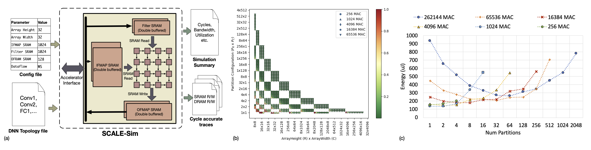

SCALE-Sim Tutorial - ASPLOS 2021
Date: April 16, 2021
Organizers
- Ananda Samajdar (Georgia Tech)
- Jan Moritz Joseph (RWTH Aachen University)
- Yuhao Zhu (University of Rochester)
- Paul Whatmough (Arm ML Research Lab, Harvard University)
- Tushar Krishna (Georgia Tech)
Overview

SCALE-SIM is a cycle-accurate CNN accelerator simulator that provides timing, power/energy, memory bandwidth and memory access trace results for a specified accelerator configuration and neural network architecture. It is based on the systolic array architecture, used in various accelerators like Google’s TPU, Xilinx XDNN etc.
SCALE-SIM enables research into DNN accelerator architectures and is also suitable for system-level studies. Designing efficient DNN accelerator is a difficult problem which requires searching in an intricate trade-off space with large number of architectural parameters. Moreover, recent DNN workloads are increasingly becoming memory bound due to increase in model sizes. A simulation infrastructure like SCALE-Sim which can provide cycle accurate estimates of performance, memory accesses, and other design metrics is therefore a vital tool to enable fast and reliable design cycles. Unlike related infrastructure, which rely on analytical models to estimate the performance and operating cost of accelerator designs, SCALE-Sim lets designers to capture the behavior of a simulator at each cycle of operation. The tool reads workload configurations as layer hyperparameters, and architectural configurations as inputs, and then generates cycle accurate multilevel memory traces and lumped performance metrics as outputs
Schedule (April 16, 2021; Eastern Time)
Remark: You will get a link to the live Zoom-Session on ASPLOS' clowdr webpage.
| Time | Agenda | Presenter | Resources |
|---|---|---|---|
| 10:10-10:45 | Introduction to DNNs and Accelerator Design | Tushar, Paul | [slides will follow] |
| 10:45-11:15 | Overview of SCALE-Sim | Paul, Anand, Moritz | [slides will follow] [material] |
| 11:15-11:50 | Tutorial 1: Design Space Exploration using SCALE-Sim | Anand | [slides will follow] [material] |
| noon-12:40 | Tutorial 2: Modifying SCALE-Sim to add custom features | Moritz | [slides will follow] [code (github)]+[easy script] |
| 12:45-1:30 | Tutorial 3: Using SCALE-Sim to build larger simulators | Anand | [slides will follow] |
| 1:30-2:00 | Plenum: Discussion on future roadmap, planned features, and a ideas from the community | Yuhao | [slides will follow] |
Resources
Relevant Papers
- SCALE-Sim v2 used for scaling study ISAPSS 2020
- SCALE-Sim v1 Arxiv